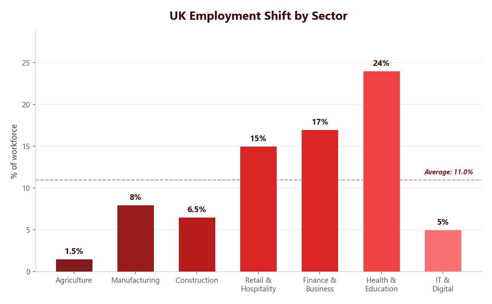

The Post-Industrial Economy
A post-industrial economy is one that no longer depends on heavy industry and manufacturing. In the UK, primary and secondary employment has been replaced by tertiary and quaternary employment. Many of these new jobs are located in science parks and business parks.
Quaternary industries include jobs in universities, IT companies, biotechnology, research and development, and creative industries such as gaming. These are part of the knowledge economy.

Science Parks and Business Parks
Science parks and business parks are purpose-built sites where quaternary industries locate. They are typically found on the outskirts of cities near good transport links such as motorways, A-roads, train stations and airports. They are also located close to housing for workers and near universities so that businesses can access cutting-edge research.
Cambridge Science Park was jointly built by Cambridge University and the local authority. It houses businesses in electronics, pharmaceuticals and high-end manufacturing (such as computer chips). The park attracts highly skilled researchers, scientists, engineers and graduates. It is located about 50 miles from London with links to the M11 motorway, rail services and nearby airports. The buildings feature modern sustainable design with car parking, green spaces and energy-efficient features. The park is more environmentally sustainable than traditional industry because it produces less pollution, uses lighter components for transport and develops new technologies that help other products become more efficient.
The number of science and business parks has grown because there is increasing demand for high-tech products, the UK has many strong research universities, and clusters of related businesses in one place can boost each other’s growth.
Environmental Impact of Industry — Castle Cement
Industry can have major environmental impacts. A key case study is Hanson Cement (locally known as Castle Cement) near Clitheroe in Lancashire. The cement works has been operational since 1936, using the local supply of limestone as a raw material. It is well connected by the A59 to the M6 motorway and has a direct railway link for transporting cement around the country.
Advantages
- The cement works contributes around £9 million to the local economy each year, creating a positive multiplier effect.
- It produces 750,000 tonnes of cement per year and supplied most of the cement for the 2012 Olympics.
- Filters in chimneys trap pollutants from burning limestone.
- Many birds, badgers and bats live in the vegetation around the works.
Disadvantages
- Congestion in Clitheroe from heavy lorries transporting cement.
- Air pollution from the cement works and lorry traffic.
- Blasting for limestone causes noise and dust, which locals complain about.
- The plant and quarry are visually unattractive and disrupt the Ribble Valley countryside, affecting tourism.
Castle Cement is taking steps to become more sustainable: recycling 100 million tonnes of waste products, using biodegradable cement bags, investing in fuel-efficient and hybrid lorries, increasing the use of rail transport, and planning to restore the old quarry into a nature reserve once limestone extraction ends.
Rural Changes in the UK
Rural areas in the UK are experiencing very different changes depending on their location. Some are growing rapidly while others are declining. Counter-urbanisation is the process of people moving from cities to the countryside, driven by factors like better transport links, a desire for more space and the availability of remote working.
Growth — South Cambridgeshire
South Cambridgeshire has a population of around 150,000, which is increasing due to migration and is estimated to reach 182,000 by 2031. People move here because of good motorway links to Cambridge and London, an attractive local high street and proximity to the science parks. However, this growth brings challenges: 80% car ownership causes traffic congestion, house prices are unaffordable for many young people, commuters spend money in the city rather than locally and there is pressure on services like the NHS.
Decline — The Outer Hebrides
The Outer Hebrides have a population of just 27,400 and have experienced a 50% population decline since 1901. Most people live on the island of Lewis. Young people leave due to limited job opportunities, poor transport links and distance from cities. Farming mostly involves sheep breeding and provides only part-time work. Fishing is limited due to environmental concerns and overseas ownership. Tourism has increased by 27% since 2007, but the islands lack the infrastructure to support large-scale tourism.
Positive effects: Newcomers maintain the population of small towns, help keep services such as bus routes, shops and schools running, and may set up new businesses. More facilities may be built to meet rising demand.
Negative effects: Wealthy newcomers and second-home owners push up house prices, pricing out local people. Older people retiring to rural areas raise the average age. Road traffic and noise pollution increase. Commuters create no daytime economy because they spend money in the city. The culture of an area can change dramatically.